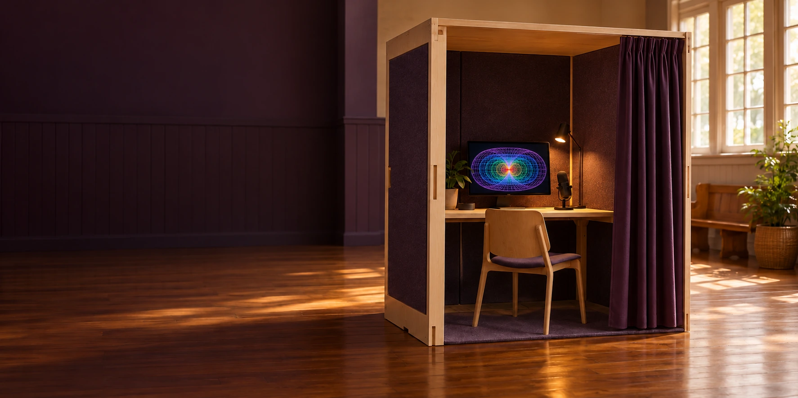
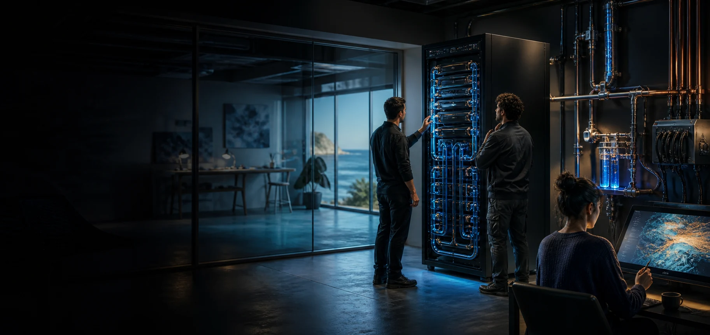

What it could change
More capable AI could speed up science and engineering. Control of those systems may bring more influence over work, income and public services.

AI depends on physical equipment, energy and people who can keep it running. That affects what families, businesses and communities can decide for themselves.
Digital twin concept artwork from Aura of Intelligence
The global buildout needs chips, data centres, electricity, cooling, minerals, factories and robotics. It also needs people who can make, install, connect and repair the equipment. Large providers can put equipment and data together on a scale few individual communities can match.
Some AI developers release the settings their models learnt in training. These are called open weights. Where the licence and equipment allow, people can run a copy on computers they control. That gives a household, business or community another way to decide where its information goes.
By superintelligence I mean AI that substantially exceeds human capability across many fields. I expect it to emerge. My estimate as of November 2026 is within six months, around May 2027.
More capable AI could speed up science and engineering. Control of those systems may bring more influence over work, income and public services.
Keep business records usable as tools change, decide who can act for you and develop the skills to maintain shared equipment.
Aura of Intelligence is the personal AI environment at the centre of this proposal. Your digital twin would connect the memories, projects, values and skills you choose to record with the AI tools you use. You could take a usable copy when you change device, provider or country.
Choose what stays private, who can see what you share and when an AI agent needs your approval. Check access, make corrections and withdraw access where practicable.
A household could keep a care plan with the person's consent. A business could record how contributors are paid and how their work is used.
Genesis is a proposed opt-in programme for adults who want to develop a more detailed personal twin. You would choose which experiences and measurements to record and learn through practice and reflection. You can also build an Aura independently of Genesis.

The Verse Box is a proposed portable station made with suitable reused equipment. You could try a creative or learning project as you build a personal Aura, then decide what to keep and which tools to carry forward.

Keep private records on your own device and send larger jobs to a shared computer when you approve them. A community organisation could use a nearby rack to transcribe a public meeting.
The Australian Missing Middle proposal models one standard server rack-equivalent per 10,000 people in a future population of 30 million. A separate global comparison in the prospectus looks at about 44,000 sites.
Local organisations could use and progressively own equipment. Each site would need power, cooling, connections, maintenance and people trained to keep it running. A pool or other nearby facility could reuse the heat where practical.
These four technologies show how computing reaches beyond the screen into transport, workshops and communications.

In November 2026, Ship 42 reached orbit, deployed Starlink satellites and became the first Starship upper stage caught by the launch tower. Recovering it from orbit was a milestone towards full reuse.

Low Earth orbit satellites can connect places where ground-based networks are hard to reach. A ship or remote household can use a terminal to connect to the network.

Driverless vehicles such as Waymo's use sensors and software to navigate within their operating areas. Passengers and cities need clear ways to get help or report problems.

Unitree's G1 is a humanoid robot. Other designs, such as Agility Robotics' Digit, move containers in warehouses. Operators need clear limits on what a robot can do and ways to intervene safely.
SpaceX reported 1.7 gigawatts of installed AI computing capacity on 30 September 2026, up from 0.6 a year earlier. Its measure adds the rated power of installed AI chips. Electricity actually used depends on the workload and also includes cooling and other facility equipment.
SpaceX’s orbital proposal would use solar panels to power computers on satellites, radiators to release heat and laser links to move data. It is a long-term plan that depends on manufacturing, launches and reliable operation in orbit.
Agree on who can act on shared information, how people can withdraw permission and how to handle complaints.
What would you like more say over in the systems you use for work, family and care?
Talk with Luke.jpg){kind=link}